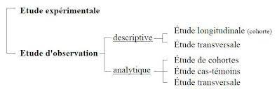

Recherche épidémiologique post-AMM: La Phase IV de la recherche clinique.
Une fois que la mise en marché du médicament à été mise en place, la recherche clinique ne se termine pas: Le médicament doit suivre une recherche épidémiologique afin de pouvoir observer les possibles risques sanitaires qu'il peut apporter.